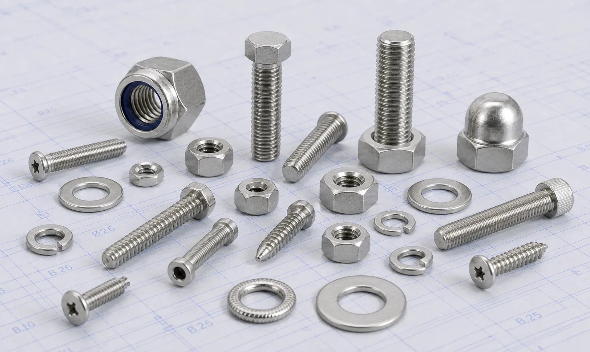

Gururaj Infradesigns manufactures Stainless Steel 316 and 316L Fasteners including hex bolts, stud bolts, anchor bolts, U bolts, nuts, washers, and socket head bolts. Corrosion-resistant fastening solutions for marine, offshore, pharmaceutical, water treatment, and industrial applications.
Stainless Steel 316 and 316L Fasteners are widely used in industries where superior corrosion resistance and long-term reliability are essential. The addition of molybdenum enhances their resistance to chlorides, seawater exposure, and aggressive chemical environments, making them suitable for demanding industrial applications. Gururaj Infradesigns is a trusted Stainless Steel 316 Fasteners Manufacturer in India, supplying high-quality fastening solutions for marine, chemical, offshore, and process industry requirements.
We also manufacture and supply Stainless Steel 316L Fasteners, a low-carbon variant of Grade 316 that offers improved weldability and reduced risk of carbide precipitation during welding. Our product range includes hex bolts, stud bolts, anchor bolts, U bolts, hex nuts, washers, and socket head bolts manufactured to meet stringent industrial standards.

Stainless Steel 316 and 316L are austenitic stainless steel grades known for their excellent resistance to corrosion, pitting, and crevice attack in chloride-containing environments. Their combination of strength, durability, and corrosion resistance makes them one of the most preferred materials for critical fastening applications.
As a specialized grade within the broader range of Stainless Steel Fasteners, 316 and 316L fasteners are commonly used in marine structures, chemical plants, pharmaceutical facilities, and offshore installations where standard stainless steel grades may not provide sufficient corrosion resistance.
| Property | Details |
|---|---|
| Grades | SS 316, SS 316L |
| Product Types | Hex Bolts, Stud Bolts, Anchor Bolts, U Bolts, Hex Nuts, Washers, Socket Head Bolts |
| Standards | ASTM, ASME, DIN, ISO |
| Sizes | M3 to M100 and Custom Sizes |
| Thread Type | Metric, UNC, UNF, BSW |
| Forms | Bolts, Nuts, Studs, Washers |
| Finish | Plain, Bright, Polished, Passivated |
| Certification | Mill Test Certificates Available |
The molybdenum content in Grade 316 improves resistance to pitting and crevice corrosion, especially in chloride-rich and marine environments where standard stainless steel grades may be susceptible to attack.
Stainless Steel 316L contains lower carbon content, helping reduce carbide precipitation during welding. This makes it a preferred choice for fabricated structures and welded assemblies.
These fasteners maintain their integrity in corrosive chemical environments, offshore installations, and coastal locations where long-term durability is critical.
316 and 316L fasteners offer a strong combination of tensile strength, toughness, and ductility, making them suitable for demanding structural and industrial applications.
Their resistance to corrosion and environmental degradation helps minimize maintenance requirements and supports extended service life in challenging operating conditions.
| Element | 316 (%) | 316L (%) |
|---|---|---|
| Carbon | Max 0.08 | Max 0.03 |
| Chromium | 16.0 – 18.0 | 16.0 – 18.0 |
| Nickel | 10.0 – 14.0 | 10.0 – 14.0 |
| Molybdenum | 2.0 – 3.0 | 2.0 – 3.0 |
| Manganese | Max 2.0 | Max 2.0 |
| Silicon | Max 1.0 | Max 1.0 |
| Phosphorus | Max 0.045 | Max 0.045 |
| Property | 316 | 316L |
|---|---|---|
| Tensile Strength | 515 MPa Min | 485 MPa Min |
| Yield Strength | 205 MPa Min | 170 MPa Min |
| Elongation | 40% Min | 40% Min |
| Hardness | 95 HRB Max | 95 HRB Max |
The superior resistance to seawater and chloride exposure makes these fasteners suitable for shipbuilding, offshore platforms, coastal infrastructure, and marine equipment.
These fasteners are commonly specified for reactors, storage tanks, pipelines, and processing equipment handling corrosive chemicals. Their enhanced resistance to aggressive media makes them suitable for critical applications where material integrity is essential.
The corrosion resistance and cleanability of these grades make them suitable for pharmaceutical manufacturing, biotechnology plants, and hygienic processing systems.
Water treatment facilities and desalination systems utilize these fasteners because of their ability to withstand continuous exposure to moisture, chemicals, and chloride-containing water. Their long service life helps reduce maintenance and replacement requirements.
Refineries, petrochemical plants, and offshore oil and gas installations utilize 316 and 316L fasteners for critical fastening applications requiring durability and corrosion resistance.
| Grade | Key Characteristics | Typical Applications |
|---|---|---|
| SS 304 & 304L | General-purpose corrosion resistance | Fabrication, Food Processing |
| SS 316 & 316L | Enhanced chloride and chemical resistance | Marine, Chemical Processing |
| SS 321 | Improved elevated-temperature stability | Thermal Systems, Heat Equipment |
Stainless Steel 316 and 316L Fasteners offer improved corrosion resistance compared to Stainless Steel 304 Fasteners, particularly in marine and chloride-rich environments. For applications involving prolonged exposure to elevated temperatures and thermal cycling, industries often utilize Stainless Steel 321 Fasteners due to their enhanced high-temperature stability and titanium-stabilized composition.
| Industry | Reason for Selection |
|---|---|
| Marine | Chloride resistance |
| Chemical Processing | Chemical corrosion resistance |
| Pharmaceuticals | Cleanability and durability |
| Water Treatment | Moisture resistance |
| Offshore Oil & Gas | Long service life |
Stainless Steel 316 and 316L Fasteners are frequently specified by engineers and procurement teams for applications where reliability, corrosion resistance, and long-term performance are critical. Their versatility makes them suitable for both new projects and maintenance requirements across multiple industries.
Gururaj Infradesigns supplies Stainless Steel 316 and 316L Fasteners in various sizes, thread forms, and specifications to support demanding industrial fastening requirements. Our products are widely used across marine, chemical, pharmaceutical, water treatment, offshore, and engineering sectors where corrosion resistance and reliability are essential.
As a trusted supplier, we support EPC contractors, OEM manufacturers, fabricators, maintenance teams, and industrial buyers with dependable fastening solutions backed by consistent quality, technical support, and timely delivery.
Quality remains a key part of our manufacturing and supply process. All Stainless Steel 316 and 316L Fasteners undergo inspection for dimensional accuracy, thread quality, material integrity, and compliance with applicable standards to ensure reliable field performance.
As an ISO Certified Company, we are committed to supplying quality fastening solutions that meet the expectations of industrial, engineering, and infrastructure projects across diverse industries.
Selecting the right fastener grade depends on operating conditions, corrosion exposure, temperature requirements, and project specifications. Using the appropriate material can improve equipment reliability, service life, and overall system performance. Our team can assist in selecting the right fastener grade, size, thread type, and specification based on your application requirements. We support EPC contractors, OEMs, fabricators, and industrial buyers with practical guidance and dependable fastening solutions for critical industrial applications.